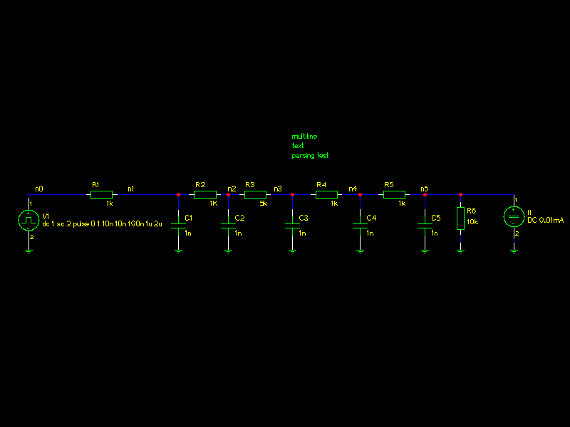
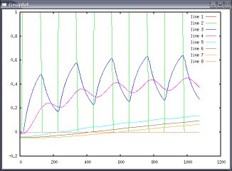

Interfacing ngspice with GNU Octave

GNU Octave is a high-level language, primarily intended for numerical computations. It provides a convenient command line interface for solving linear and nonlinear problems numerically, and for performing other numerical experiments using a language that is mostly compatible with Matlab. It may also be used as a batch-oriented language.
GNU Octave can be used as a powerful post processor for the analysis of ngspice output vectors, but interfacing them is not straightforward. An import filter to read ngspice plots is needed.
Octave Spice
Octave Spice is a filter, written in Octave language, to import ngspice and spice plot. Octave spice can be downloaded from a ngspice download site.
Example:
We want simulate the transient response of the RC2 circuit and analyze the results with Octave. RC2 is the rc network depicted in the picture below.

The corresponding netlist is:
* simulation de RC2 .control tran 10n 10000n write .endc * Spice netlister for gnetlist R5 n4 n5 1k V1 n0 0 dc 1 ac 2 pulse 0 1 10n 10n 100n 1u 2u R4 n3 n4 1k R3 n2 n3 5k C5 n5 0 1n R2 n1 n2 1K C4 n4 0 1n R1 n0 n1 1k C3 n3 0 1n C2 n2 0 1n C1 n1 0 1n I1 n5 0 DC 0.01mA R6 0 n5 10k .END
To simulate the netlist we will run:
user@host:~$ ngspice -b rc2.cir
Now we can import the file ngspice produced ( named rawspice.raw) into octave with the following command:
user@host:~$ octave GNU Octave, version 2.1.69 (i386-pc-linux-gnu). Copyright (C) 2005 John W. Eaton. This is free software; see the source code for copying conditions. There is ABSOLUTELY NO WARRANTY; not even for MERCHANTIBILITY or FITNESS FOR A PARTICULAR PURPOSE. For details, type `warranty'. Additional information about Octave is available at http://www.octave.org. Please contribute if you find this software useful. For more information, visit http://www.octave.org/help-wanted.html Report bugs to <bug@octave.org> (but first, please read http://www.octave.org/bugs.html to learn how to write a helpful report). octave:1> k=spice_readfile("rawspice.raw");
The plot contained in file "rawspice.raw" is put into the k vector and the following output is generated:
s = { commands = {} date = Mon Sep 12 14:32:22 2005 dimensions = 0 no_points = 0 no_variables = 0 options = {} plotname = Transient Analysis title = * simulation de RC2 } octave:2>
Now we can plot the results (as in nutmeg, but we are using Octave):
octane:2>plot (k)
... and the results is shown below

Once imported into GNU Octave you can manipulate vectors using its powerful language and produce better (than nutmeg) plots with GNUplot.